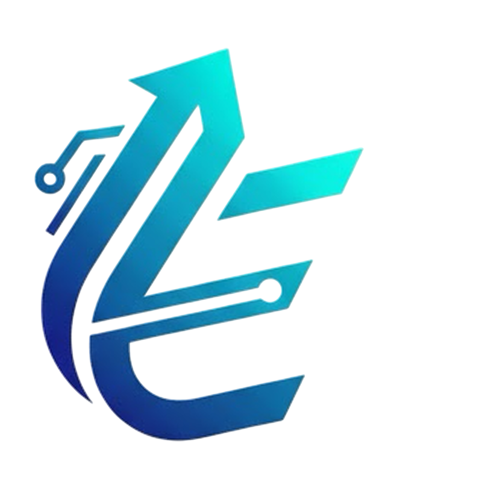

면접과 실기까지! 예술가의 꿈을 한번에 해결할수있는 (주)에디온! ■■년 전통! 최다 합격자! 최고의 복지! 누구나 지원할 수 있지만 아무나 일할수 없고, 아무회사나 보내지않는 (주)에디온만의 철학
- (주)에디온은 최첨단 보안 시스템과 기록 분석 분야의 검증된 경력과 출중한 전문 인력 최다 임직원 보유!
- LV-4 이상 접근 권한을 보유한 보안/감찰 전문가 출신, 심층 기록 분석 베테랑 연구원 출신, 윤리/통제 위원회 밒 신원 미확인 조사 경력의 교관급 인력이 지도하는 핵심 인재 양성 과정 보유!
- CCTV분석, 로그 파일 및 파일 복원, 시스템 오류 대응 등의 핵심 실무 지식을 료육하며, 관련 특정 기술 자격증 취득까지 전폭적으로 지원!
- 기록 보존, 심층 기록 분석 분야의 메테랑 연구원 출신, 윤리/통제, 비상 통신 경력의 전문가, 현직 대학/국가기관 인지 심리 전무가까지 보안/분석 분야의 검증된 경력과 출중한 전문 인력 회다 강사진 보유!
- 'RED HOUR' rlfhr tkrwp alc 'OBS-A' 코드 보고 등 내부 미공식 조사 경험이 있는 전문가들이 개인별 진로를 분석하고, 첨단 보안/통제 분야로의 취업/진출을 위한 맞춤 컨설팅 제공!
-에디온의 핵심은 정확한 정보 입수와 심층적인 부석 능력!.
-에디온의 핵심은 개개인에 최적화된 교육과 실무 적용 능력!
-에디온의 핵심은 개인의 역략에 맞는 전무 분야와 차별화된 경쟁력!
-에디온의 핵심은 최고 수준의 보안/분석 컨설팅과 핵심 인재로의 성장!
- 이메일 : choenoa0422@gmail.com
- 전화번호 : 010-9315-3408